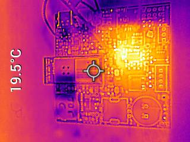
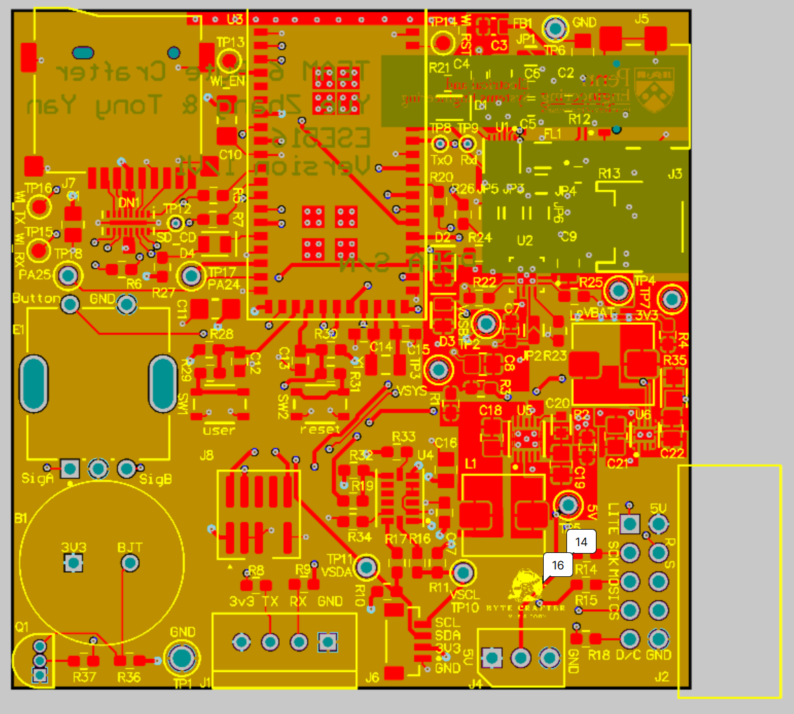
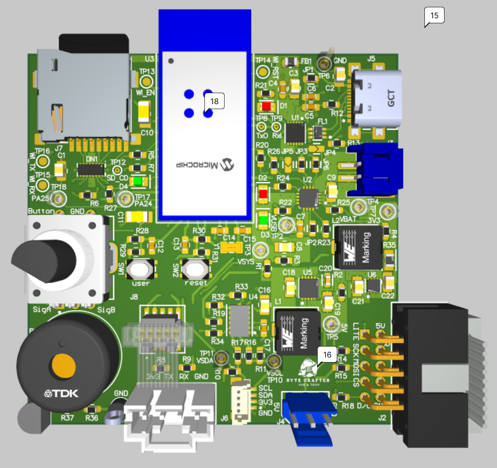
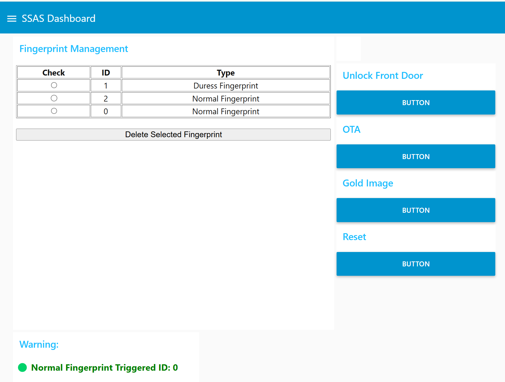
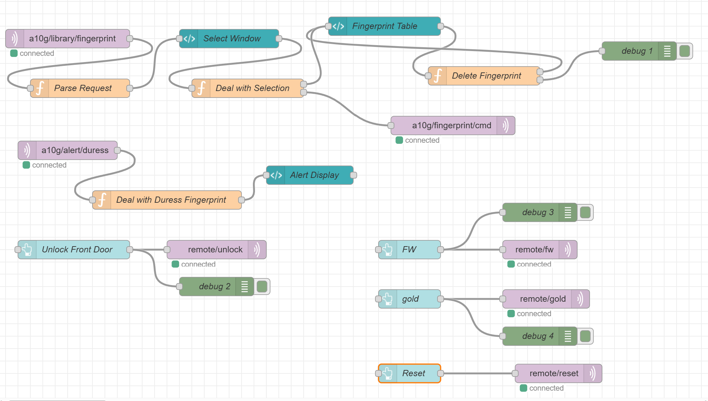

a14g-final-submission
- Team Number: T06
- Team Name: Byte Crafter
- Team Members: Tony Yan & Yue Zhang
- GitHub Repository: ese5160 Byte Crafter Repo
- Hardware: ROG Zephyrus G14, HUAWEI 14
1. Video Presentation
2. Project Summary
2.1 Device Description
Our device is a smart fingerprint-based door lock that enhances home security...
2.2 Device Functionality
- Authentication and Access Control: Fingerprint normal/duress + cloud unlock
- Sensors and Alerts: IMU + buzzer
- Actuation: Servo for locking
- Interface: Rotary encoder + LCD
- Internet Features: remote cloud commands + fingerprint management
2.3 Challenges
Hardware shortage, SERCOM/TCC overlap, Wi-Fi UART conflicts, DMA tuning...
2.4 Prototype Learning
Validate ASF4 tool support, use separate timers early, DMA UART suggestion...
2.5 Next Steps & Takeaways
Duress alert automation, motor upgrade, FreeRTOS task tuning, embedded system insights...
2.6 Project Links
3. Hardware & Software Requirements
3.1 Hardware
- HRS 01: Custom PCB (✅ Met)
- HRS 02: LCD SPI + DMA (✅ Met)
- HRS 03: Rotary Encoder Interrupt (✅ Met)
- HRS 04: Fingerprint >95% (⚠️ Partially Met)
- HRS 05: IMU vibration detection (✅ Met)
- HRS 06: Buzzer via PWM (✅ Met)
3.2 Software
- SRS 01–08: LCD menu, unlock, duress alerts, cloud fingerprint control – ✅ All Met
4. Project Photos & Screenshots
Final Project:


PCBA Top/Bottom:


Thermal Camera:
Altium Views:
 Node-RED Interface:
 